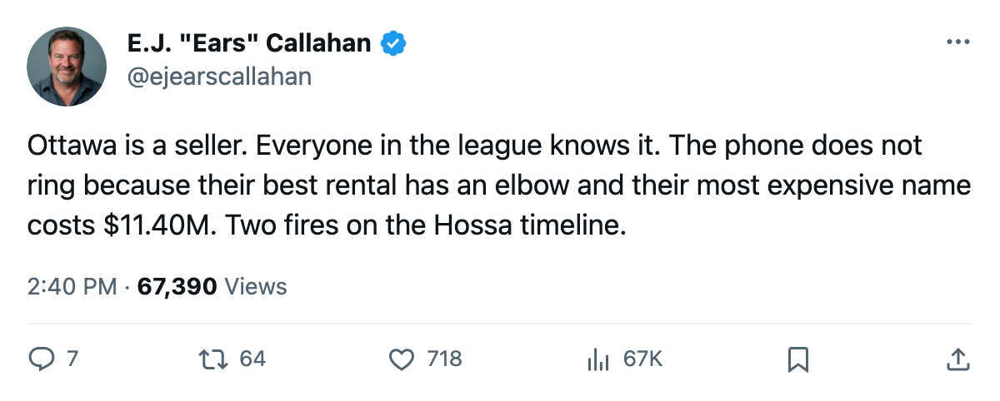
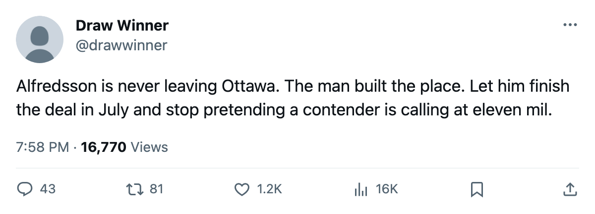

RUMOR METER: Ottawa's Deadline Window Opens January 14 and Closes March 19 🔥🔥
The league's cheapest 82-rated expiring name is on the shelf with an elbow. His teammate making $11.40M is not.
 E.J. "Ears" CallahanInsider · The Hot Stove
E.J. "Ears" CallahanInsider · The Hot Stove

Hossa traded before the deadline

 Marian Hossa82 returns January 14. What the calendar has as the trade deadline falls March 19. Between those dates,
Marian Hossa82 returns January 14. What the calendar has as the trade deadline falls March 19. Between those dates,  Ottawa Senators has to find a club willing to pay for an elbow that is already swollen.
Ottawa Senators has to find a club willing to pay for an elbow that is already swollen.
The Senators are 9-14-7 with 29 points, $2.04M a point on a $59.27M payroll, a seller by any measure that matters. The problem is what they have to sell.
Hossa, 26, carries an 82 overall on the Bureau's Book, 26 points in 31 games, and $2.30M against the cap. That is the cheapest top-pair talent on the contract-year market, and it is in a sling. The league puts the elbow onset between December 20 and December 22. He is out 3 weeks minimum.
 Daniel Alfredsson89 is the other name. 89 overall, 30 points in 32 games, $11.40M with one year left. He is the most expensive contract in the expiring top 30. Nobody is calling about him. At $11.40M with a 9-win hockey club behind him, Alfredsson is a buy-side poison pill: the salary kills the value, and the team record kills the urgency.
Daniel Alfredsson89 is the other name. 89 overall, 30 points in 32 games, $11.40M with one year left. He is the most expensive contract in the expiring top 30. Nobody is calling about him. At $11.40M with a 9-win hockey club behind him, Alfredsson is a buy-side poison pill: the salary kills the value, and the team record kills the urgency.
The 64-day sprint
Hossa's return date gives Ottawa roughly 9 weeks of regular season to prove the elbow is healed before the deadline, which is not a long audition. A club shopping for a rental winger at the deadline wants to see 10, 12 games of health and production. Ottawa might get that if he starts February 1 on pace. They will not get it if the elbow flares.
The buyer with the cleanest need:  Dallas Stars sits at 51 points, the West's best mark, and has two goaltenders on expiring deals themselves (Jason Bacashihua91 and
Dallas Stars sits at 51 points, the West's best mark, and has two goaltenders on expiring deals themselves (Jason Bacashihua91 and  Ron Tugnutt86). Dallas has cap room and a winning record. They are the club with the most obvious path to a call.
Ron Tugnutt86). Dallas has cap room and a winning record. They are the club with the most obvious path to a call.
League sources say Ottawa has sounded out no one on Hossa specifically. The room knows the injury timing is the problem. You do not trade a rental at peak value when he has not skated.
What I'd rate
Two fires. The talent is there, the contract is cheap, and the team needs to move someone. But the injury timing leaves barely enough room for a proper audition. If Hossa returns January 14 and plays 15 games by March 1 without the elbow bothering him, the phone rings. If it swells once in February, Ottawa carries him past the deadline and loses the asset.
Alfredsson is a separate problem. At $11.40M with one year left and 29 points for the club, he is a re-sign-or-lose-him candidate, not a trade candidate. Ottawa at 89.0 club morale cannot promise him a winner. That conversation happens in July, not March.
The deadline is 85 days away. Ottawa's window to trade Hossa is 64 of them.

